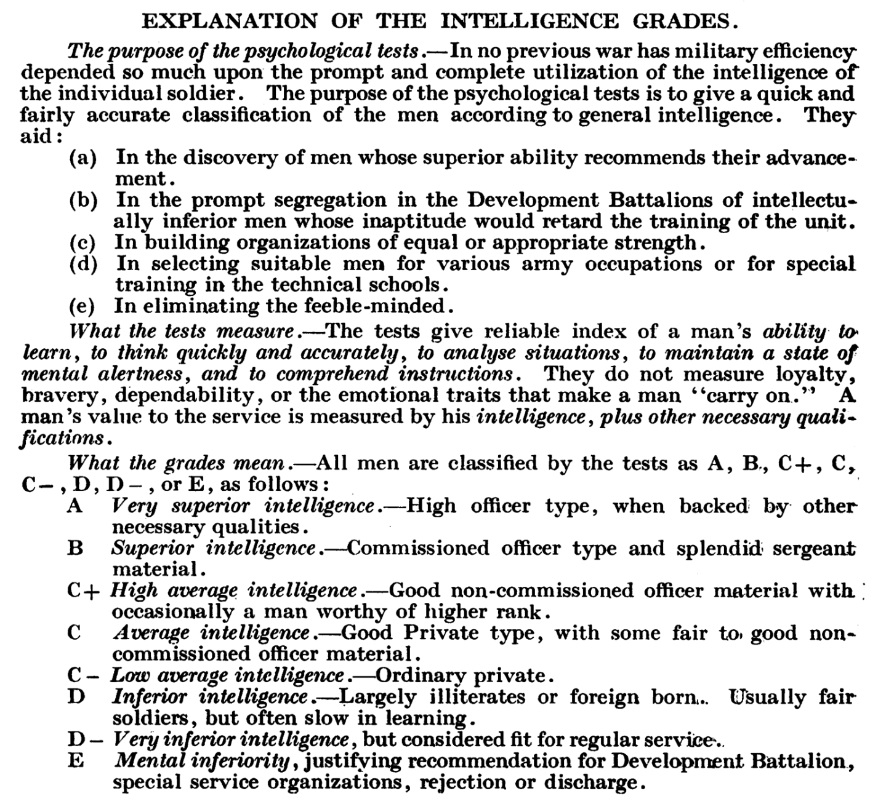

PSYC 2530: Intelligence testing
A short history of early cognitive testing
Matthew J. C. Crump
Last compiled 09/21/22
Roadmap
1 The intelligence test race
3 Mental testing and Eugenics
What is intelligence?
Everyone knows what that means

Hmmm, the more I think about it…

Questions to consider
- What is intelligence?
- What are intelligence tests and what do they
measure?
- How have these tests been used in society?
- Reasonable people have diverging opinions about the
above questions
- This class explores the historical context and
development of IQ tests
The intelligence test race
The eugenics movement desired “scientific” tests
that could convincingly measure individual differences in mental
ability
A eugenics goal was to develop mental tests,
test whole segments of society, then deploy positive and negative
eugenic social policies on people depending on their test
results
Psychologists committed to the eugenics movement
“raced” to develop suitable mental tests during the turn of the
century
Turn of the century (1900)
Psychologists around the world are developing
tests to measure people on numerous dimensions (mental, physical,
health, etc.)
National governments (UK, Germany, France, USA)
are beginning to use, or consider using tests in conjunction with social
policy and decision-making.
James Mckeen Cattell (1860-1944)
Founding Editor of Psychological Review (1894)
APA president (1895)
Bought the journal Science, edited
it for many years
Removed from position at Columbia for expressing opposition to
American involvement in World War I
Cattell as Galton’s acolyte
Cattell visited Galton in the UK and popularized Galton’s
psychological and eugenics mission in the USA
Conducted research in the style of Galton,
motivated by eugenics
Attempted to develop mental tests to measure
individual differences in human quality
Men of science
Galton and Cattell both tried to demonstrate that “men of science” in
England and the US had inherited superior traits
Galton

Testing Columbia students
Cattell, J. M., & Farrand, L. (1896). Physical and mental
measurements of the students of Columbia University. Psychological
Review, 3(6), 618. https://doi.org/10/ckms9q
Cattell’s tests weren’t predictive
Efforts to predict Columbia students grades (a potential measure of
their intelligence) from Cattell’s tests were not successful.
Binet’s Critiques
As mentioned previously, several other psychologists around the world
were attempting to develop their own versions of mental tests
Roadmap
1 The intelligence test race
3 Mental testing and Eugenics
Binet’s Motivation
The French government was already enacting social policies to
institutionalize “unfit” children
Children were being sent away on the basis of subjective judgments
from teachers and parents.
Binet thought objective mental tests would allow for a more rational
decision-policy that could be used to optimize the process.
Translated to English in 1916
Kite, E. S. (1916). The development of intelligence in children (The
Binet-Simon Scale). Williams & Wilkins Company.
You can read it all here
Binet’s testing method
Binet created a variety of puzzle-like tasks
Chose tasks that he thought required mental processing
Systematically measured how children of different ages perform on
each task
Quantification problem
Binet had a large number of results from many children on many
tests
And, he recognized that “intelligence” was a complex,
multi-dimensional, fuzzy concept
He sought a method to distill his measurements into a convenient and
simple scale…his solution was mental age.
Equating mental ability with Age
Age was simple like a ruler, going up in
increments of one year at a time.
Children develop physically and mentally as they
grow, and this development is reflected in their age
Binet assumed that mental abilities steadily
increased every year until adulthood.
Linking Age to mini-test results
One test signifies nothing, let us emphatically repeat, but five or
six tests signify something. And that is so true that one might almost
say, ‘It matters very little what the tests are so long as they are
numerous.’ - Binet
No single mini-test indicates anything about your “mental age”…
Norm-based comparison
Binet’s measurements had meaning through
comparison to empirical norms.
Empirical norms are existing measurements of how
other children performed on the test
The large empirical database allowed Binet to
assess how anyone performs the mini-tests compared to the groups of
children he measured.
Algorithms for computing mental age
Meaning of modern IQ?
Binet’s scale was in “mental” years
Modern “intelligence tests” use a standardized
scale, often termed IQ or intelligence quotient
Binet died in 1911, and his strategy for mental
testing was quickly adopted by American psychologists for the purposes
of the eugenics movement.
Roadmap
1 The intelligence test race
3 Mental testing and Eugenics
Human Betterment Foundation
Lewis Terman
American Psychologist (1877-1956) at Stanford University
APA president (1923)
Eugenics leader and advocate
Popularized Binet-Simon test in USA as Stanford-Binet test
Terman’s Stanford-Binet revision
Terman advocated for widespread intelligence testing across
America
1916, published a revised version of Binet’s test for Americans.
Terman’s eugenic motivations
it is safe to predict that in the near future intelligence tests will
bring tens of thousands of these high-grade defectives under the
surveillance and protection of society. This will ultimately result in
curtailing the reproduction of feeble-mindedness and in the elimination
of an enormous amount of crime, pauperism, and industrial
inefficiency.
The number of children with very superior ability is approximately as
great as the number of feeble-minded. The future welfare of the country
hinges, in no small degree, upon the right education of these superior
children.
Eugenical concerns about war
World war I had broken out in 1914…
Eugenicists were debating whether war would help or hurt the causes
of eugenics
War could eliminate “unfit” people, but could be randomly killing
“fit” and “unfit” people.
Eugenicists were interested in using mental tests in the war
effort
American Psychologists in WWI
Yerkes, R. M. (1918). Psychology in relation to the war.
Psychological Review, 25(2), 85–115. https://doi.org/10/dhdj4j
APA created several committees to determine how
psychologists could help the war effort.
Many of them were committed to the eugenics
movement, and one-time APA presidents, including Robert Yerkes, Madison
Bentley, Edward Thorndike, John B. Watson, Walter D. Scott, Robert
Woodworth, and Carl Seashore
The Alpha-Beta Test
Alpha-Beta tests involved mass testing of 1.75 million Americans
A “mental census” for the Army
Psychologist Robert M Yearkes (1876-1956)

Examples
Alpha test was for literate soldiers
Beta test was for illiterate soldiers
Racial bias
Yearkes argued the results showed that whites had superior
intelligence compared to blacks and immigrants
Application and Interpretation

Scientific Racism
Carl Brigham popularized the alpha-beta army test results in his 1922
book

He furthered racist conceptions of intelligence

IQ testing and mental health
Eugenics proponents advocated that IQ tests be used to identify
“feeble-minded” people that should be institutionalized by the state
and/or involuntarily sterilized
Goddard’s “who is a moron?”
Goddard describes how “feeble-mindedness” should be split into
categories based on IQ
idiot: mental age of two
imbecile: mental age of 3 to 7
moron: mental age of 8 to 12
Goddard’s problem
Considers two general “solutions” to how society should deal with
people identified as “morons” by IQ tests
Roadmap
1 The intelligence test race
3 Mental testing and Eugenics
Critical Responses
Kamin, L. J. (1974). The science and politics of IQ. Psychology
Press.
Hilliard, A. G. (1976). A Review of Leon Kamin’s The Science and
Politics of I.Q. Journal of Black Psychology, 2(2), 64–74. https://doi.org/10/gg3hr5

Black Psychologists in APA
Up through the 1960s, the APA was overwhelmingly white
In an APA meeting in 1968, a small group of Black Psychologists
formed their own organization, ABPsi.
Williams, R. (1974). A History of the Association of Black
Psychologists: Early Formation and Development. Journal of Black
Psychology, 1(1), 9–24. https://doi.org/10/gg3hq4
Moratorium on IQ testing of Black children
Outcomes
Advocacy of Black psychologists led to a moratorium on intelligence
testing of Black children in California (1979), still in effect
There was also substantial pushback from groups with vested financial
interests in intelligence testing
Williams, R. L., & Mitchell, H. (1978). What Happened to ABPsi’s
Moratorium on Testing: A 1968 to 1977 Reminder. Journal of Black
Psychology, 4(1–2), 25–42. https://doi.org/10/gg6btt
Further reading
The Journal of Black
Psychology has published many excellent articles on intelligence
testing and its impacts on society
Guthrie, Robert V. (1976, 2004 2nd ed.) “Even the Rat was White” A
Historical View of Psychology.
What’s next
This is the last lecture for the psychology, eugenics, and
intelligence testing learning module.
Your next step is to complete a quiz or assignment by the due date
posted on blackboard.
The next learning module is on the topic of “associations”